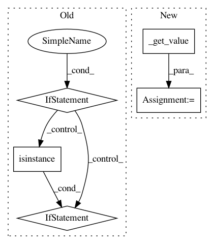

29628cab50c7b84ed64776fa02f6eb6e29a55569,dataset/pipeline.py,Pipeline,_exec_import_model,#Pipeline#Any#Any#,715
Before Change
def _exec_import_model(self, _, action):
model_name = self._get_value(action["model_name"])
if ModelDirectory.find_model_by_name(model_name, pipeline=self) is None:
with self._models_lock:
if ModelDirectory.find_model_by_name(model_name, pipeline=self) is None:
if isinstance(action["source"], Pipeline):
ModelDirectory.import_model_from(model_name, action["source"], self)
else:
ModelDirectory.import_model(model_name, action["source"], self)
def train_model(self, name, make_data=None, save_to=None, mode="w", *args, **kwargs):
Train a model
Parameters
After Change
def _exec_import_model(self, batch, action):
model_name = self._get_value(action["model_name"], batch=batch)
source_name = self._get_value(action["source_name"], batch=batch)
source = self._get_value(action["source"], batch=batch)
self.models.import_model(source_name, source, model_name)
def train_model(self, name, make_data=None, save_to=None, mode="w", *args, **kwargs):
In pattern: SUPERPATTERN
Frequency: 3
Non-data size: 5
Instances
Project Name: analysiscenter/batchflow
Commit Name: 29628cab50c7b84ed64776fa02f6eb6e29a55569
Time: 2018-01-12
Author: rhudor@gmail.com
File Name: dataset/pipeline.py
Class Name: Pipeline
Method Name: _exec_import_model
Project Name: analysiscenter/batchflow
Commit Name: fb9c6af24400732aae9cf6cd3a84f916777ff655
Time: 2017-10-26
Author: rhudor@gmail.com
File Name: dataset/pipeline.py
Class Name: Pipeline
Method Name: _make_model_args
Project Name: mlflow/mlflow
Commit Name: 0ed27c5071061588aee0382673b4a5f1678e3370
Time: 2019-03-28
Author: mani@databricks.com
File Name: mlflow/utils/search_utils.py
Class Name: SearchFilter
Method Name: _get_comparison